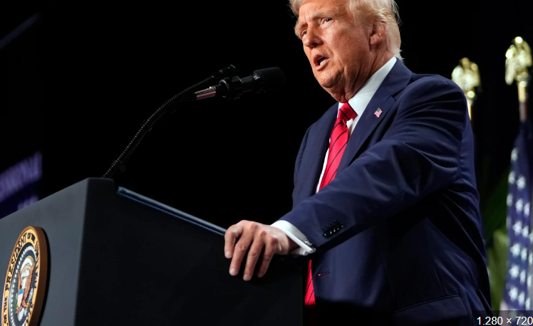
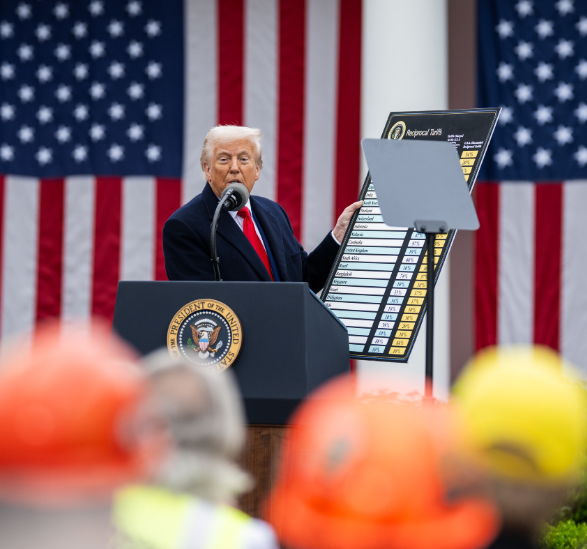

Trump 2025: ¿Hacia un nuevo orden mundial o una era de incertidumbre?
Oswaldo A. Guevara
20 de abril, 2025

Quizá muchos de nosotros tenemos dudas sobre las últimas actuaciones de Donald Trump en la Casa Blanca, y no es para menos. En este
artículo intentaremos abordar varios temas: deportaciones, reformas estructurales, controversia internacional con los aranceles y cómo
esto está afectando al comercio internacional.
Es cierto que tras su regreso a la presidencia, Trump ha implementado políticas que han generado tensiones tanto nacionales como
internacionales. Su administración está redefiniendo el papel de Estados Unidos en el mundo.
Pero, ¿cuáles son sus planes a futuro? ¿Por qué está tomando medidas poco ortodoxas? ¿Por qué esas ansias de impactar al mundo entero,
aun sabiendo que se va a perjudicar a sí mismo? ¿Qué está detrás de todo esto?
Un Mundo en Reconfiguración

En sus primeros cien días de su segundo mandato, Donald Trump ha implementado una serie de políticas que han generado tensiones tanto a
nivel nacional como internacional. Desde decisiones unilaterales, es decir, aquellas que se toman sin necesidad de
consultar o negociar con las otras partes involucradas, hasta reformas internas polémicas, su administración
está redefiniendo el papel de Estados Unidos en el mundo.
Política Exterior y Relaciones Internacionales
El señor 'bonachón', a quien todos conocimos hace años, el señor que ayudaba y era amigable hasta con sus 'rivales' económicos e históricos,
ha día de hoy ha adoptado una postura más agresiva en política exterior, retirándose de organismos internacionales como el
Consejo de Derechos Humanos de la ONU y el Acuerdo de París, lo que ha debilitado la cooperación multilateral.
Además, ha reducido significativamente la ayuda exterior, con un recorte de más de $60 mil millones en programas de asistencia
internacional, generando vacíos que otras potencias como China podrían aprovechar, lo cual podría ser contraproducente para los
intereses Norteamaricanos.
En cuanto a la OTAN, ha cuestionado el compromiso de defensa mutua, generando incertidumbre entre los aliados europeos.
Su enfoque migratorio incluye deportaciones masivas sin pruebas, lo que ha generado sentencias judiciales en su contra y posibles
cargos por desacato.
El analista geopolítico Robert D. Kaplan advierte sobre una nueva era de competencia global por recursos naturales,
especialmente minerales críticos, lo que él denomina una forma moderna de imperialismo. Según Kaplan, esta carrera por recursos marca un cambio
en la política exterior de Estados Unidos, alejándose de sus antiguos valores liberales para adoptar un enfoque más realista y amoral,
similar al de China y Rusia.
Por otro lado, la profesora Christina Pagel identifica cinco amplios dominios en las acciones de la administración
Trump que corresponden a las características de los estados protoautoritarios: el debilitamiento de las instituciones democráticas
y el Estado de derecho, el desmantelamiento del gobierno federal, el desmantelamiento de las protecciones y los derechos sociales,
la supresión de la disidencia y el control de la información, y una política exterior agresiva y desestabilizadora.
⚖️ Decisiones Clave: Consecuencias para el Mundo y para EE.UU.
1. 📉 Retiro de Estados Unidos de organismos internacionales
Decisión: Trump se retiró de varios organismos multilaterales, incluyendo la UNESCO, el Consejo de Derechos Humanos
de la ONU, y paralizó la financiación a la OMS.
Impacto Global:
Este movimiento ha debilitado la cooperación internacional en temas clave como salud global,
cambio climático y derechos humanos. Organizaciones que dependían del financiamiento estadounidense han recortado programas,
especialmente en países en desarrollo.
Impacto en EE.UU:
Aisló aún más a EE.UU. de sus aliados, debilitando su influencia diplomática y geopolítica.
Según el diplomático retirado Thomas Shannon:
“Trump ha cambiado el rol de EE.UU. de árbitro mundial a jugador imprevisible. Los aliados ya no ven a Washington como un
referente confiable”.
2. 🛂 Deportaciones masivas y cierre de fronteras
Decisión: Implementó una política de “deportación rápida”, incluso para personas con años de residencia. Además,
cerró parcialmente la frontera sur y limitó visados.
Impacto Global:
Países latinoamericanos como México, Guatemala y Honduras reportan un aumento en la presión social
y económica por el retorno masivo de ciudadanos.
Impacto en EE.UU:
La medida ha provocado protestas internas, parálisis en sectores como la agricultura y la
construcción por falta de mano de obra, y saturación del sistema judicial.
La jurista de inmigración María Elena García señala:
“Está criminalizando la migración de forma masiva, sin un plan estructurado. Las consecuencias serán duraderas”.
3. 💸 Política económica nacionalista
Decisión: Reimplantó altos aranceles a importaciones clave, incluyendo productos tecnológicos chinos y materias primas
europeas.
Impacto Global:
Ha intensificado las tensiones comerciales con China y la Unión Europea, generando represalias. Varios
países han empezado a buscar acuerdos alternativos, reduciendo la dependencia de EE.UU.
Impacto en EE.UU:
Si bien ha incentivado a algunas industrias locales, también ha elevado los precios al consumidor.
La inflación ha repuntado, afectando sobre todo a la clase media y baja.
El economista Paul Krugman ha criticado abiertamente estas
medidas:
“Trump no entiende que un país no puede cerrarse al mundo sin pagar un precio. Está usando el nacionalismo económico como
herramienta electoral”.
4. 🛡️ Reformas militares y expansión del presupuesto de defensa
Decisión: Aprobó un aumento del 25% en el presupuesto militar y anunció nuevas bases en el Pacífico.
Impacto Global:
Provocó respuestas defensivas por parte de China y Rusia, que han aumentado también sus gastos
militares. Se habla de un “nuevo orden multipolar en tensión”.
Impacto en EE.UU:
El gasto ha desviado recursos de sectores clave como salud y educación. Varios gobernadores
han mostrado su preocupación.
La senadora demócrata Elizabeth Warren declaró:
“Trump está construyendo una máquina de guerra, pero deja a los ciudadanos sin medicamentos ni escuelas”.
5. 📡 Restricción al acceso a la información y ataques a medios
Decisión: Ha intensificado el discurso contra los medios, eliminando acreditaciones a periodistas críticos y recortando
fondos públicos a medios independientes.
Impacto Global:
Organizaciones como Reporteros Sin Fronteras han encendido las alarmas sobre el debilitamiento de
la libertad de prensa en un país históricamente líder en esta área.
Impacto en EE.UU:
El periodismo de investigación se ha vuelto más difícil y ha aumentado la polarización.
Muchos ciudadanos ya solo confían en fuentes alineadas a sus ideologías.
🔮 ¿Qué nos espera? Posible futuro bajo el liderazgo de Trump

Con el regreso de Donald Trump a la presidencia, el tablero geopolítico y la estabilidad interna de Estados Unidos se han transformado
drásticamente. Las preguntas ahora giran en torno a lo que viene: ¿seguirá por el mismo camino?, ¿radicalizará aún más sus posturas?,
¿cómo responderán el resto de las potencias?
A continuación, desglosamos tres posibles escenarios planteados por expertos:
📘 Escenario 1: Consolidación de un nuevo orden mundial.
En este posible rumbo, Trump continúa retirándose de compromisos multilaterales y limita su participación en foros internacionales.
Esto podría dar paso a un mundo más fragmentado, donde potencias como China, Rusia e incluso India tomen un rol más protagónico.
La politóloga Anne Applebaum señala:
“Si EE.UU. se repliega, no dejará un vacío; lo llenarán otros actores con agendas muy distintas. Esto podría marcar el fin
del liderazgo occidental tal como lo conocimos”.
Consecuencias posibles:
Reducción de cooperación internacional frente a amenazas globales.
Avance de regímenes autoritarios.
Menor protección de derechos humanos a nivel internacional.
🔥 Escenario 2: Radicalización interna y caos institucional
Si Trump se ve fortalecido por una base leal y un Congreso sumiso, podría intentar reformar aspectos clave del sistema institucional:
cambiar reglas electorales, intervenir en el poder judicial o incluso reformar la Constitución.
El historiador Timothy Snyder ha advertido:
“Trump no busca gobernar dentro del sistema, busca rehacerlo a su imagen. Si gana poder absoluto, intentará convertir la
democracia en una fachada”.
Consecuencias posibles:
Desconfianza en el sistema electoral.
Polarización extrema entre estados y regiones.
Aumento del autoritarismo y protestas masivas.
🧩 Escenario 3: Estancamiento y resistencia institucional
Un tercer escenario es que, aunque Trump intente implementar cambios profundos, las instituciones (Congreso, justicia, sociedad civil)
frenen sus iniciativas, creando un clima de tensión constante, pero también de resistencia.
La constitucionalista estadounidense Cass Sunstein considera:
“El sistema estadounidense tiene frenos y contrapesos muy fuertes. No será fácil desmantelar la democracia, pero el precio será
el bloqueo, la incertidumbre y el desgaste social”.
Consecuencias posibles:
Congresos paralizados y reformas bloqueadas.
Judicialización de la política.
Pérdida de credibilidad global por inestabilidad.
Trump ha regresado con fuerza y, con él, una visión del mundo más cerrada, combativa y orientada al conflicto. Si bien aún es incierto
hacia dónde se dirigirá Estados Unidos bajo su liderazgo, algo parece claro: el mundo ya no lo observa como el “líder del orden
internacional”, sino como una potencia impredecible.
El verdadero desafío no es solo Trump, sino lo que representa: un síntoma de una era de cambios, miedos y transformaciones globales.
Y quizás, el inicio de algo aún más grande... o más caótico.